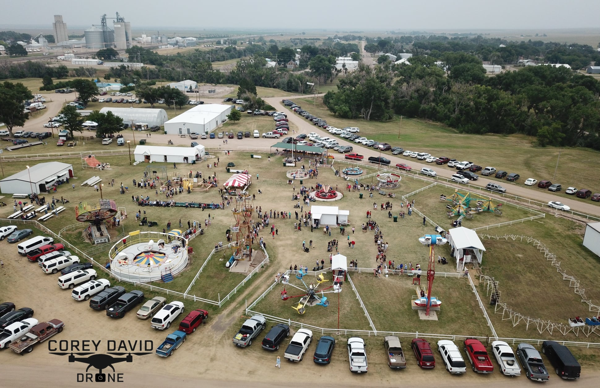

<mat-accordion>
    <mat-expansion-panel hideToggle>
      <mat-expansion-panel-header>
        <mat-panel-title>
          Interactive Map
        </mat-panel-title>
      </mat-expansion-panel-header>
      <app-interactive-fair-map></app-interactive-fair-map>
    </mat-expansion-panel>
    <mat-expansion-panel (opened)="panelOpenState = true"
                         (closed)="panelOpenState = false">
      <mat-expansion-panel-header>
        <mat-panel-title>
          Static Map
        </mat-panel-title>
        <mat-panel-description>
          Currently I am {{panelOpenState ? 'open' : 'closed'}}
        </mat-panel-description>
      </mat-expansion-panel-header>
      <div id="staticMap">
        
      </div>
    </mat-expansion-panel>
    <mat-expansion-panel hideToggle>
        <mat-expansion-panel-header>
          <mat-panel-title>
            Parking Map
          </mat-panel-title>
        </mat-expansion-panel-header>
        <p>This where I will put the parking Map. When I build it.</p>
      </mat-expansion-panel>
  </mat-accordion>